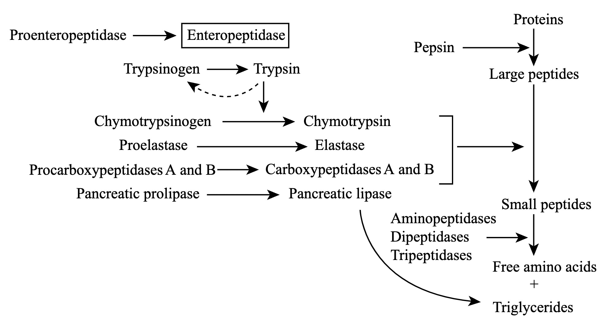
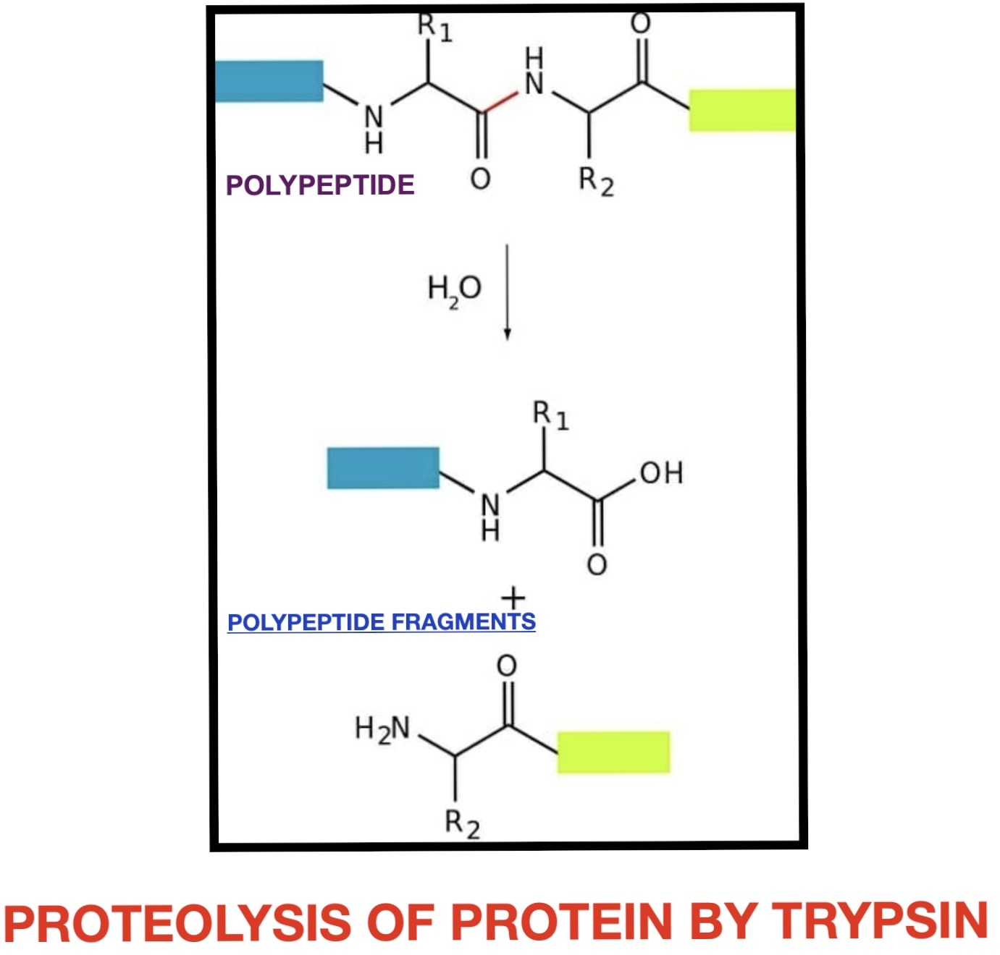
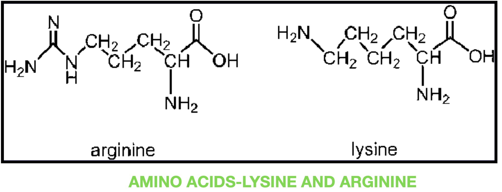
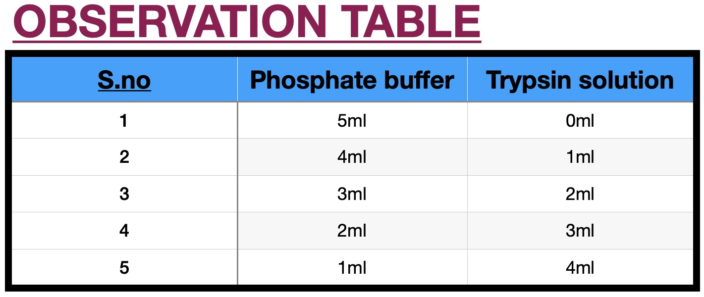
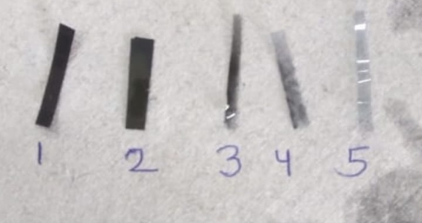

To perform an experiment to demonstrate the enzymatic activity of Trypsin.
Trypsin is a pancreatic serine protease that is involved in the breakdown of dietary protein molecules into peptides. Pancreas, a accessory digestive organ is made up of small clusters of glandular epithelial cells. 99% of these clusters are acini that is the exocrine portion of the organ which secrete a mixture of fluid and digestive enzymes pancreatic juice. These pancreatic acinar cells secrete zymogen form of trypsin ie trypsinogen into small intestine. The pancreatic acinar cells also secrete a protein called trypsin inhibitor which combines with any trypsin formed accidentally in the pancreas which blocks its enzymatic activity. As trypsinogen reaches the small intestine it is acted on by enzyme enterokinase secreted by small intestinal mucosa. This enzyme cleaves and activate trypsinogen to trypsin. Trypsin, chymotrypsin and pepsin are the three key digestive proteases involved in the breakdown of proteins into small peptides. Once trypsinogen is activated into trypsin, it causes its own lysis and produces more trypsin from inactive trypsinogen. Activated trypsin works efficiently at alkaline pH ( around pH 8). It is also involved in the activation of other digestive enzymes as well such as chymotrypsinogen to chymotrypsin, pro-elastase to elastase, procarbboxypeptidases A&B to carboxypeptidases A&B and pancreatic pro-lipase to pancreatic lipase. Trypsin cleaves the peptide bond at carboxyl side of amino acids arginine and lysine. Presence of proline residue on the carboxyl side of cleavage site will prevent the trypsin action. Also at cleavage site with acidic residue on the either side, rate of catalysis by enzyme will slow down.



Animation of the experiment:--
Click here to perform the simulation


Photographic film is a strip or sheet of transparent film base coated on one side with a gelatin emulsion containing microscopically small light-sensitive silver halide crystals. The sizes and other characteristics of the crystals determine the sensitivity, contrast, and resolution of the film. When these filmstrips are dipped in trypsin solution, it acts on the gelatin present in the film. The more is the concentration of trypsin, more will be the digestion of gelatine and therefore the strip will take less time to become transparent. Trypsin is the one of the many proteases in the body involved in protein digestion of utmost importance. To date, trypsin has been widely used in leather bating, detergents, and the food and pharmaceutical industries. In particular, trypsin was also used in insulin manufacture to convert the insulin precursor into insulin ester by digesting the mini-C-peptide. A genetic defect which prevents its autolysis causes hereditary pancreatitis (inflammation of pancreas). Trypsin's role is also associated with chronic pancreatitis and cystic fibrosis. One consequence of the autosomal recessive disease cystic fibrosis is a deficiency in transport of trypsin and other digestive enzymes from the pancreas. This leads to the disorder termed meconium ileus, which involves intestinal obstruction (ileus) due to overly thick meconium, which is normally broken down by trypsin and other proteases, then passed in feces. A combination product that contains trypsin, bromelain, and rutin (Phlogenzym) seems to work about as well as a medication called diclofenac in relieving pain and improving knee function.